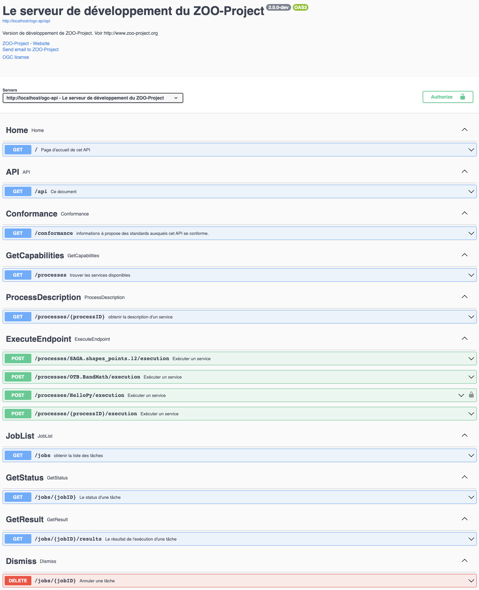
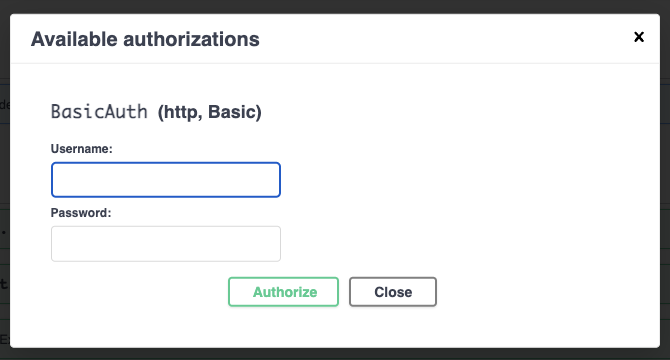

Secure access to specific end-points using HTTP Basic Authentication¶
Introduction¶
In this section, your want to secure access to the execution of the HelloPy process. You will start setting up the HTTP Basic Authentication process which is available per default in the official ZOO-Project docker image.
Configuration steps¶
As you can see in the official documentation,
to secure the HelloPy service execution access, it will be required
to add a secured key in the corresponding endpoint. If you take a
look into the default oas.cfg, you notice that there is not such an
endpoint yet. So, as a first step you will add the section
corresponding to the endpoint.
First, start a shell from the running container.
docker exec -it zpgit-zookernel-1 bash
From this shell, use the commands below to add an access restriction to the HelloPy execution end-point. The sed command adds the path correctly to the list.
cat >> /usr/lib/cgi-bin/oas.cfg << EOF
[processes/HelloPy/execution]
length=1
pname=HelloPy
rel=http://www.opengis.net/def/rel/ogc/1.0/execute
method=post
secured=BasicAuth
title=execute a job
abstract=An execute endpoint.
tags=ExecuteEndpoint
tags_description=
schema=http://schemas.opengis.net/ogcapi/processes/part1/1.0/openapi/responses/ExecuteSync.yaml
parameters=/components/parameters/oas-header1
ecode=400,404,500
eschema=http://schemas.opengis.net/ogcapi/processes/part1/1.0/openapi/responses/ExecuteAsync.yaml
[osecurity]
name=BasicAuth
type=http
scheme=basic
realm=Secured section
charset=utf-8
passwd=/tmp/htpasswords
[filter_in]
path=/usr/lib/cgi-bin
service=securityIn
EOF
sed "s#/processes/OTB.BandMath/execution,#/processes/OTB.BandMath/execution,/processes/HelloPy/execution,#g" -i /usr/lib/cgi-bin/oas.cfg
Here, we use the default values provided in the official
documentation
except the [filter_out] which won’t be used here.
After these first modifications, if you reload your service-doc link or press the explore button to refresh the API definition, you should have a new endpoint for the HelloPy execution as shown below.
{kind=link}
Create a password file¶
The default service responsible for verifying authentication using HTTP Basic Authentication requires a file that stores the user and password informations. So, in this section, you will start by creating such a file.
First, modify the docker-compose.yaml file (located in
$WS_DIR/ZPGIT) a bit to add the following volumes to both
zookernel and zoofpm.
- ./docker/security:/etc/zoo-security
Then, make sure to restart your containers with the new settings.
docker-compose down && docker-compose up -d
Now, create the password file with the command below.
docker exec zpgit-zookernel-1 htpasswd -c -b /etc/zoo-security/htpasswords test test
Execute the HelloPy service¶
Now, go back to the link with rel service-doc. You should be able to run the HelloPy process after authenticating using the test/test credentials.
{kind=link}
To do so, you can use the following execute request body.
{
"inputs": {
"a": "Martin et Jules"
},
"outputs": {
"Result": {
"transmissionMode": "value"
}
}
}
By selecting “respond-async;return=representation” for the Prefer header parameter, you should be able to run the process asynchronously.
Please execute the command below to make this example request available from swagger-ui.
sed "s#[processes/HelloPy/execution]#[processes/HelloPy/execution]\nexamples=sample.json\nexamples_summary=Simple echo request#g" -i /usr/lib/cgi-bin/oas.fg
Then, create and copy the file in the proper location.
cat > test.json << EOF
{
"inputs": {
"a": "Martin et Jules"
},
"outputs": {
"Result": {
"transmissionMode": "value"
}
}
}
EOF
# Create the target directory
docker exec zpgit-zookernel-1 mkdir /var/www/html/examples/HelloPy
# Copy the file to the right location on the zookernel container
docker cp test.json zpgit-zookernel-1:/var/www/html/examples/HelloPy/sample.json
Conclusion¶
In this section, you have activated the security in the OpenAPI exposed by the ZOO-Kernel and setup the default securityIn process as the authentication filter.
You have learnt that for activating the security using the ZOO-Project you should define the secured endpoints and a service that will be run before every single HTTP request to the server. Only, in case the endopint is secured, the return value of the service execution will be taken into account. In other cases, the service will be run but it return value won’t be taken into account.
In the last part, you have learnt how to add new examples for ease the use of your service by simply providing the execution request as you did for the HelloPy for any other processes.